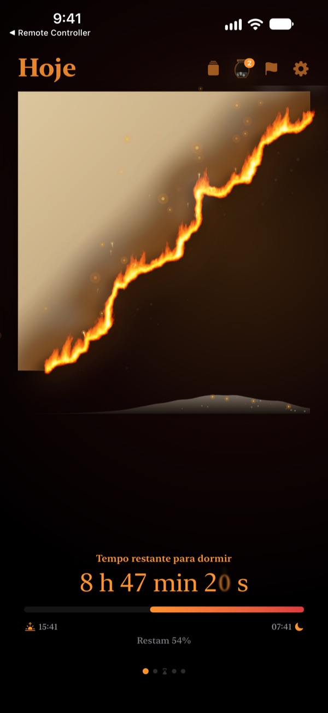
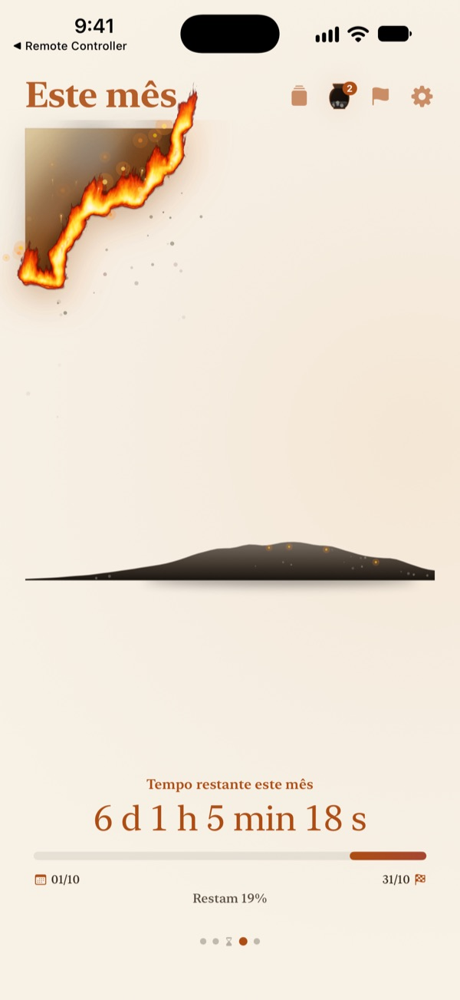
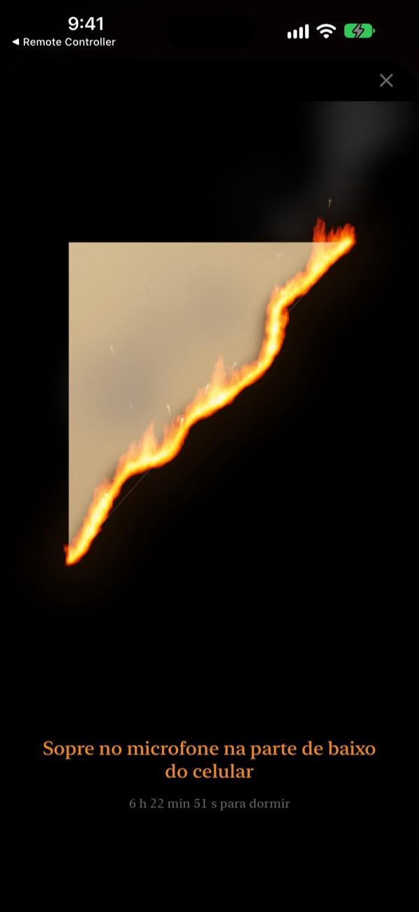
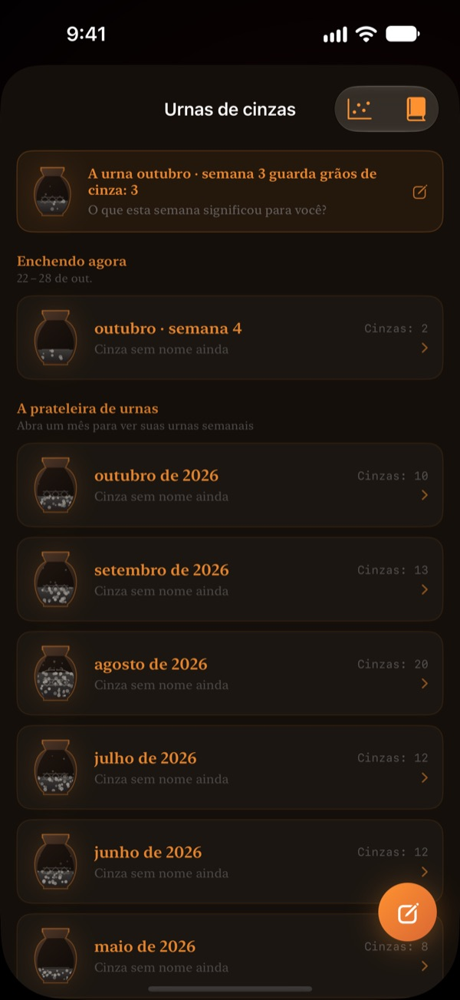

O que sobra de hoje
queima na sua frente
Uma noite que parece inofensiva em números fica bem diferente como um pergaminho em chamas. Meia hora antes de dormir, sopre na tela, apague o fogo e encerre o dia.
O pergaminho em chamas, o ritual do sopro e as reflexões são grátis.

Experimente apagar com um sopro
Leve o horário para pouco antes de dormir e segure o botão ou sopre no microfone.
Já levou aquele susto de "já é meia-noite?"
Você janta, senta um pouquinho e o dia acabou. Os números do relógio parecem iguais toda noite, então você não sente o tempo indo embora. O Pergaminho em Chamas mostra o que sobra como um pergaminho queimando, para você perceber antes que a noite suma.
Seu dia, sua semana e seu ano queimando
Do momento em que você acorda até a hora de dormir, o pergaminho queima devagar. Veja também quanto sobra desta semana, deste mês e deste ano.
Adicione uma meta com data como prazo e a contagem regressiva corre junto.

Encerre o dia com um sopro
A partir de 30 minutos antes de dormir, sopre no pergaminho para apagar o fogo. Só a força do sopro é usada, nada é gravado.
O fragmento que sobra fica guardado. Vire e escreva no verso uma linha sobre o seu dia.

O tempo que passou vira cinza
Relembre o dia com uma reflexão de uma linha e coloque um ponto num gráfico de dois eixos conforme o uso daquele tempo. As reflexões se acumulam em urnas de cinzas semanais e mensais e podem ser relidas no Livro de reflexões.
O Fluxo das cinzas mostra para onde foi o seu tempo, com um gráfico de distribuição e um calendário de brasas.

Comece em três passos
- 1
Defina os horários
Toque na engrenagem no canto superior direito. O pergaminho acende e apaga nesse horário.
- 2
Escolha o período
Deslize entre dia, semana, mês e ano, ou oculte nos Ajustes as páginas que não usa.
- 3
Adicione um widget
Na Tela de Início ou na Tela Bloqueada, você vê o tempo que sobra sem abrir o app.
Onde ver o tempo que sobra
- Dia
- Do momento em que você acorda até a hora de dormir
- Semana · Mês · Ano
- Quanto sobra desta semana, deste mês e deste ano
- Tempo livre
- O pergaminho da semana só queima nas horas que você reserva para si (Pro)
- Prazos
- Tempo até a data de uma meta. Um é grátis
- Widgets da Tela de Início
- Pergaminho do dia nos tamanhos pequeno, médio e grande. Semana, mês, ano e prazos em pequeno e médio
- Widgets da Tela Bloqueada
- Circular, retangular e em linha
- Dynamic Island · Atividade ao Vivo
- A partir de uma hora antes de dormir ou o dia todo. Escolha ou desative nos Ajustes
Expanda a Dynamic Island para ver o pergaminho em chamas com a contagem completa.
O pergaminho é grátis. O Pro guarda mais.
Grátis
- Pergaminhos de dia, semana, mês e ano
- Soprar a chama e guardar fragmentos
- Reflexões de uma linha, urnas de cinzas e Livro de reflexões
- Check-in da manhã, com dados de sono do app Saúde se quiser
- Widgets da Tela de Início e da Tela Bloqueada, Dynamic Island
- Um prazo
Pergaminho em Chamas Pro
- Queimar só o seu tempo livre
- Temas: Hanji ao luar, Celadon, Entardecer
- Chamas: Fogo de campo, Brasas, Estrelinha
- Compartilhar fragmentos como cartões e pôsteres
- Exportar o Livro de reflexões em PDF
- Doze meses de Fluxo das cinzas
- Prazos ilimitados
Não é assinatura. Uma compra só, para sempre, com todos os recursos Pro que vierem depois.
Trocou de aparelho? Toque em Restaurar compras nos Ajustes.
Perguntas frequentes
O widget mostra um horário diferente do app.
O iOS não redesenha os widgets da Tela de Início a cada segundo. Abrir o app sincroniza tudo. Para uma contagem que anda segundo a segundo, use a Dynamic Island e a Atividade ao Vivo na Tela Bloqueada.
Eu sopro, mas o fogo não apaga.
Só dá para apagar a partir de 30 minutos antes de dormir. Confira se o acesso ao microfone está permitido e sopre de forma contínua, por cerca de um segundo, perto do microfone na parte de baixo do iPhone. Um som rápido não basta.
Minha voz é gravada?
Não. O app só mede a força do sopro. Nenhum som é gravado ou salvo.
O que aparece enquanto eu durmo?
Depois da hora de dormir, surge um coração em chamas mostrando quanto da noite já passou até você acordar. De manhã, o app pergunta se você dormiu no horário; se foi tarde, o pergaminho de hoje começa chamuscado na mesma medida. Conectado ao app Saúde, ele usa o horário em que você pegou no sono sem perguntar.
Quando chegam as notificações?
Uma hora antes de dormir. Se não chegarem, confira Ajustes > Notificações > Pergaminho em Chamas.
Gasta muita bateria?
A contagem dentro do app anda a cada segundo, mas os widgets são atualizados pelo iOS em modo de baixo consumo. O impacto é pequeno.
Onde ficam meus dados?
Horários, prazos, reflexões e urnas ficam só no seu aparelho. O desenvolvedor recebe apenas estatísticas de uso anônimas, diagnósticos de falhas e o feedback que você decidir enviar. Sem anúncios, sem rastreamento.
O Pro é assinatura?
Não. Você paga uma vez e fica com ele para sempre. Em outro aparelho, toque em Restaurar compras nos Ajustes.
Bugs, ideias ou outras dúvidas: escreva para leeo@kakao.com.